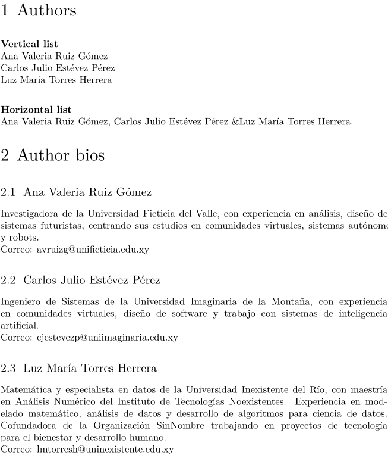

Syntax (autogenerated)
| \definedataset[...][...][...=...,...] | |
| [...] | name |
| [...] | name |
| ...=...,... | inherits from \setupdataset |
Syntax
| \definedataset[...][...,...=...,...] | |
| [...] | name |
| [...,...=...,...] | delay |
| delay | yes no |
Description
Define a dataset, inside which key-value tables can be stored with \setdataset. If any tables are defined, the dataset is stored in the .tuc file. If the optional second argument [delay=yes] is added, each table stored in this dataset will have three extra entries: index and order will both contain the number (1, 2, 3, ...) of the \setdataset call that defined the table; realpage will contain the number of the PDF page that TeX was working on when the table was stored with \setdataset.
Usage
Here is an example where the dataset is defined with the [delay=yes] option. If the option had not been given, the index, order, and realpage entries would simple be missing.
% Create the dataset `mydata` \definedataset[mydata][delay=yes] % index=1, realpage=2 \setdataset[mydata][goldfish][colour=gold] % index=2, realpage=1 \setdataset[mydata][silverfish][type=insect] \page[yes] % index=3, realpage=2; overwrites previous goldfish table. \setdataset[mydata][goldfish][type=fish] % Results in the following Lua table in the .tuc file % ["mydata"]={ % ["goldfish"]={ % ["type"]="fish", % ["index"]=3, % ["order"]=3, % ["realpage"]=2, % }, % ["goldfish"]={ % ["type"]="insect", % ["index"]=2, % ["order"]=2, % ["realpage"]=1, % }, % }
Storing and Accessing Datasets from Lua
The macro interface for datasets does not allow saving arbitrarily
structured data to the .tuc file. This limitation can be
overcome by using the governing Lua functions directly. They reside in
the job.datasets namespace.
(Cf. core-dat.lua, later than 2012-09-18.)
Saving Data
The function job.datasets.setdata handles the storing.
It takes one argument of type table.
This table has three required fields: name, tag and data.
The name field is equivalent to the first argument of
\definedataset (see above): the dataset answers to this
identifier.
The tag field is the id of the entry that will be saved,
corresponding to the second argument of \setdataset.
The data field is supposed to containt the actual content that
needs saving. If it is a table, it will be serialized to the
.tuc file under the namespace
utilitydata.job.datasets.collected.
Take the following snippet as an example. A fairly elaborated nested
structure is passed to datasets.setdata().
\starttext \startluacode local setdata = job.datasets.setdata setdata { name = "dataset_id", tag = "this", data = { "does", work = { "splendidly", "for", nested = { "tables", "!", {{}} } } } } \stopluacode \stoptext \endinput
This will cause the following section to be added to the
.tuc file (note that the “tag” is represented by a simple
hash entry):
utilitydata.job.datasets.collected={
["dataset_id"]={
["this"]={
"does",
["work"]={
"splendidly",
"for",
["nested"]={
"tables",
"!",
{
{},
},
},
},
},
},
}
Retrieving Stored Data
The complement to setdata is getdata.
Of its four possible arguments, the two are essential. They correspond
to the name and tag fields of a stored dataset.
NB: It is not possible to retrieve the entire dataset all at once
by passing getdata only one argument.
The following example demonstrates how to restore the subentry this of the dataset dataset_id as defined in the previous section:
\startluacode local getdata = job.datasets.getdata table.print(getdata ("dataset_id", "this"), "this") \stopluacode
Processing Datasets
You can process a dataset with \processdataset and use setups to generate the desired output:
-
% Create the dataset: \definedataset[autores] % Fill the dataset: \setdataset[autores][ nombre={Ana Valeria Ruiz Gómez}, bio={Investigadora de la Universidad Ficticia del Valle, con experiencia en análisis, diseño de sistemas futuristas, centrando sus estudios en comunidades virtuales, sistemas autónomos y robots.}, email={avruizg@unificticia.edu.xy}, ] \setdataset[autores][ nombre={Carlos Julio Estévez Pérez}, bio={Ingeniero de Sistemas de la Universidad Imaginaria de la Montaña, con experiencia en comunidades virtuales, diseño de software y trabajo con sistemas de inteligencia artificial.}, email={cjestevezp@uniimaginaria.edu.xy}, ] \setdataset[autores][ nombre={Luz María Torres Herrera}, bio={Matemática y especialista en datos de la Universidad Inexistente del Río, con maestría en Análisis Numérico del Instituto de Tecnologías Noexistentes. Experiencia en modelado matemático, análisis de datos y desarrollo de algoritmos para ciencia de datos. Cofundadora de la Organización SinNombre trabajando en proyectos de tecnología para el bienestar y desarrollo humano.}, email={lmtorresh@uninexistente.edu.xy}, ] % Now, create setups for presentation: % A setup to display an author bio as a section: \startsetups[userdata:bioautor] \startsection[title={\datasetentry{nombre}}] \datasetentry{bio}\par\page[no] Correo: \datasetentry{email} \stopsection \stopsetups % A setup to display a vertical list of author names, separated with paragraph breaks: \startsetups[userdata:lvautores] \datasetentry{nombre}\par \stopsetups % A setup using \processaction to display an horizontal list of author names, % each followed by a comma and a space, except the penultimate name, % which will be followed by { \ampersand }, and the last one, followed by a period. % We determine position in the dataset using \datasetindex % and compare it with the dataset size (\datasetsize{autores}). \startsetups[userdata:lhautores] \dontleavehmode \datasetentry{nombre} \processaction[\datasetindex][ \datasetsize{autores}=>{.}, \number\numexpr\datasetsize{autores}-1\relax=>{ \ampersand }, unknown=>{, } ] \stopsetups \startdocument \startchapter[title={Authors}] {\bf Vertical list} \processdataset[autores][userdata:lvautores] \blank[2*big] {\bf Horizontal list} \processdataset[autores][userdata:lhautores] \stopchapter \startchapter[title={Author bios}] \processdataset[autores][userdata:bioautor] \stopchapter \stopdocument
Result:
- 
See also
- \setdataset to store a key-value tables in a dataset
- \datasetvariable to retrieve a value from a key-value table in a dataset
- More detailed explanations and examples can be found in the Key-Value Assignments article, under the section Multi-pass data .
Help from ConTeXt-Mailinglist/Forum
All issues with: